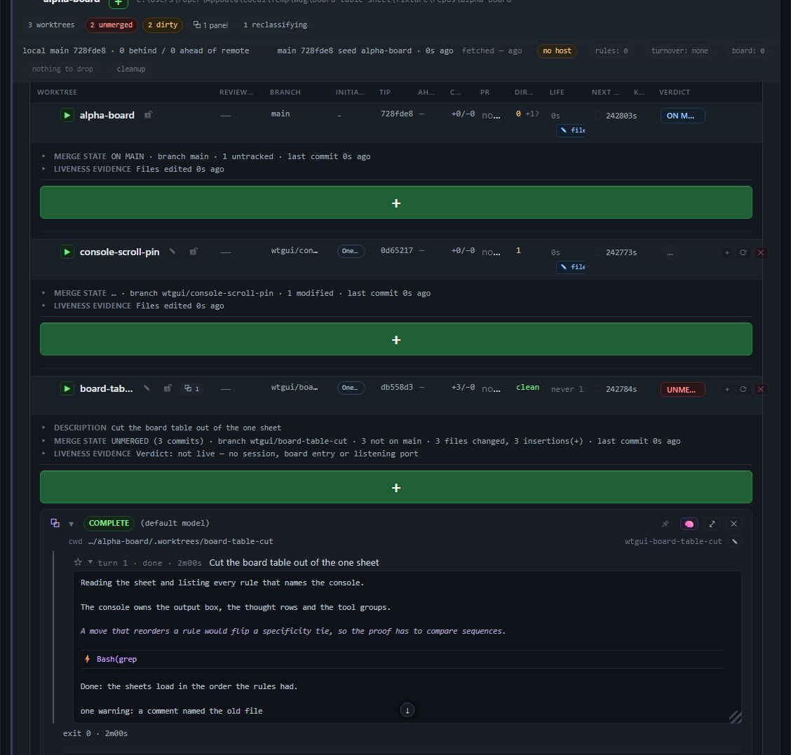
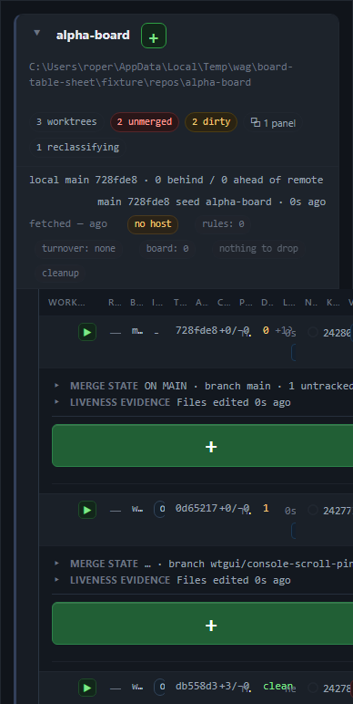

The board table has one sheet now
Row 444. Tree row-444-is-the-complete-brief-the-board-9e1458, cut from
20261127_2134_TASK-405_row-405-is-the-complete at 895e7282. Every number below was measured
in this tree on 2026-11-28; the command that produces each one is in section 10.
public/board-table.css (2,339 lines, 798 rule blocks), takes the
board table out of six sheets. public/board.css, public/rows.css and
public/boardchips.css are gone: 503 of their 503 rule blocks are in the new sheet, and 10 rules that were
never the board's (the page footer, the clipboard flash, the job card's jump flash) went to the sheets that own them.
public/chart.css gives up the 190 board rules it had accumulated and keeps 47: the poll ring, the age
column and the legend.
What proves it. The rule set is identical, not merely similar: 3,380 rule blocks before and 3,380 after, keyed by at-rule context, selector and declarations, with 0 missing and 0 extra. The cascade is identical: the same 4 (selector, property) pairs across sheets, in the same sheets, with the same winners, and none of them involves a moved sheet. And in a real browser, with one document and the two sheet sets swapped under it, all 2,768 elements and 67 pseudo boxes compute the same style at 1160 px and at 420 px, and the captures are byte-identical.
1. The brief, checked against the tree before anything moved
The brief quotes the review at docs/reports/css-split-review-2026-11-28.html (section 9 tangle 1 at
:467, the section 6 table at :337, the board's own tangle at :405): 776 elements,
316 surface rules, 46 in board.css and 270 over 11 other sheets, with chart.css owning 87
including 15 selectors that name #projects.
Re-running the review tool against the base export reproduces the top of that: 776 elements inside
#projects and 316 rules matching them. The 316 break down as 198 rules the board owns, 99 that
belong to the console nested inside every row, 12 from the base layer and 7 dormant, and the 198 are spread over seven
sheets:
| sheet at the base | board rules it owns | what they are |
|---|---|---|
chart.css | 79 | the row chips and their popup, the row flash, the guide lines, the poll ring and the age column |
board.css | 49 | the project card, the head, the rail, the new-agent form, the approvals dock |
rowstrips.css | 28 | the git strip under each row, the console head |
late.css | 18 | the legend, and the narrow-window layout that has to load last |
rows.css | 8 | the row's action buttons |
overlays.css | 8 | the row's live block |
boardchips.css | 8 | the header's chip buttons |
The brief's 46 and 270 are the same tool a fixture earlier: it reads 49 and 198 here because the seeded board rendered 776 elements this run, not the report's 763. Section 6 below says what that difference is and why it does not touch this row's claim.
The 15 selectors that name #projects were not in chart.css any more
The brief sends this row to move them "out of chart.css". At the base, chart.css names
#projects zero times: a previous row (commit 687cb0b1) had already lifted those fifteen
rules into public/board.css:198-333, under a comment saying exactly that. So they existed, they were just
one file further along than the brief expected, and this row moved them the rest of the way. They are now
public/board-table.css:209-344, and the sheet that names #projects is the board table's own:
grep -c '#projects' public/chart.css prints 0, public/board-table.css prints 16 lines, 15 of
them selectors.
2. What moved, and where it came from
The sheet set went from 22 links to 20. Three sheets were emptied and deleted; one was added; ten rules found their true owners in two sheets that already existed.
| source | rules at the base | rules now | where the rest went |
|---|---|---|---|
public/board.css | 213 | 0, deleted | 203 to board-table.css, 7 to chrome.css (the page footer), 3 to jobs.css (the jump flash) |
public/rows.css | 181 | 0, deleted | all 181 to board-table.css |
public/boardchips.css | 109 | 0, deleted | 109 to board-table.css |
public/chart.css | 237 | 47 | 190 to board-table.css; the poll ring, age column and legend stay |
public/rowstrips.css | 133 | 48 | 85 to board-table.css; the console head and its utilities stay |
public/late.css | 54 | 33 | 21 to board-table.css (the legend, the row flash); the narrow-window block stays last |
public/overlays.css | 275 | 266 | 9 to board-table.css (the row's live block) |
public/chrome.css | 63 | 70 | +7: the page footer and the clipboard flash, from board.css and chart.css |
public/jobs.css | 83 | 86 | +3: @keyframes jumpflash and .job.jump, the chart's only non-chart rules |
public/board-table.css | 0 | 798 | new: 203 + 181 + 109 + 190 + 85 + 21 + 9 |
798 = 203 + 181 + 109 + 190 + 85 + 21 + 9, and 213 + 181 + 109 - 7 - 3 = 493 of the three deleted sheets' 503 rules
are in the new sheet, with the other 10 in chrome.css and jobs.css. Nothing else moved:
base.css, settings.css, console.css, turns.css,
assistant.css, feedback.css, assistant-panes.css, initiatives.css,
panes.css, queue.css, pipeline.css, core/pipeline-card.css and
core/task-card.css are byte- and rule-identical.
Method
Three sheets were split at rule boundaries by slice-board-table.py (a scratch slicer, not committed):
each segment was cut at the comment banner and closed brace that end a rule, the source range was removed, and the
segment was appended to the new sheet under a banner naming its source file and line range. Each of the 13 segments
carried a sha256 taken from the source text before the cut and checked against the new sheet after it, so
a lost or doubled rule would have shown as a hash mismatch before any browser ran. The three deleted sheets were not
half-emptied: they were emptied of every rule and then removed, which is why the rule multiset below is the only
measurement that can settle it.
3. The rule set is identical, rule block for rule block
Each sheet was parsed with the same parser tools/verify-css-split.mjs uses, every rule keyed by
at-rule context | selector | declarations, and the multisets compared. Text, not CSSOM: a browser drops
and re-adds rules across a sheet swap, and this has to prove the files.
| measure | base | this tree | verdict |
|---|---|---|---|
sheets in index.html | 22 | 20 | three deleted, one added |
| rule blocks | 3,380 | 3,380 | equal |
| rules missing from this tree | - | 0 | none |
| rules this tree adds | - | 0 | none |
| sheets added | - | 1 | board-table.css |
| sheets removed | - | 3 | board.css, rows.css, boardchips.css |
Per sheet, rule blocks before and after - the numbers that show where the 798 came from and that nothing else moved:
| sheet | before | after | sheet | before | after |
|---|---|---|---|---|---|
base.css | 13 | 13 | assistant.css | 98 | 98 |
chrome.css | 63 | 70 | feedback.css | 226 | 226 |
settings.css | 281 | 281 | assistant-panes.css | 126 | 126 |
board.css | 213 | - | initiatives.css | 406 | 406 |
rows.css | 181 | - | panes.css | 120 | 120 |
boardchips.css | 109 | - | queue.css | 76 | 76 |
board-table.css | - | 798 | pipeline.css | 263 | 263 |
chart.css | 237 | 47 | late.css | 54 | 33 |
console.css | 292 | 292 | core/pipeline-card.css | 51 | 51 |
jobs.css | 83 | 86 | core/task-card.css | 16 | 16 |
turns.css | 64 | 64 | overlays.css | 275 | 266 |
rowstrips.css | 133 | 48 | total | 3,380 | 3,380 |
4. The cascade: no new tie, and the four that exist are untouched
Moving a rule between sheets changes what it beats. The review tool lists every (selector, property) pair that two or more sheets set, with the sheet that wins by load order, and the list is identical before and after:
| selector | props | sheets | winner | context |
|---|---|---|---|---|
.topbar | 2 | chrome.css, late.css | late.css (position, padding) | @media (max-height: 300px) |
.jl-think .think-dot | 1 | console.css, pipeline.css | pipeline.css (animation) | @media (prefers-reduced-motion: reduce) |
.shell | 1 | assistant.css, late.css | late.css (align-items) | @media (max-height: 300px) |
None of the three selectors is a board element and none of the six sheets is a moved one. That is not luck: the
new sheet was inserted at the exact index the old per-surface sheets occupied - see section 7 - so every board rule kept
its position in the load order relative to every sheet it used to sit beside. A rule that moved from chart.css
(index 19) to board-table.css (index 3) did change position relative to the other sheets, which is why the
browser proof in section 5 is the one that settles it, and why the pairs above were re-read after the move: the board
table's rules conflict with nothing, so their order among themselves and against the other sheets' selectors is not
load-order sensitive.
5. The browser proof: one document, two sheet sets
Two boots of the fixture do not render the same document. Measured twice on the same tree, the board came back 13
elements apart: the panel's scan keeps adding and dropping chips while the page is open, and a countdown ring redraws
every second. A second boot therefore cannot prove anything about a stylesheet. The harness
(npm run verify:board-table-sheet, tools/verify-board-table-sheet.mjs) does the opposite of a
second boot:
- It boots the page once from this tree, seeds the fixture, expands every project and row, then freezes the document: it closes the event stream and clears every interval the page armed, and refuses to measure unless four samples of the element count agree.
- It exports the base revision with
git archive, reads the 22 sheets that page loaded, and inserts them into the live<head>as<style>elements - disabled - at the index the per-surface sheets occupy. A disabled<link>fetches late, so the text is fetched first and each element's own sheet is disabled instead, which is synchronous. - It measures A, B, A: the base sheets, this tree's sheets, the base sheets again. If A and A do not agree the document moved under the harness and the run fails rather than claiming anything.
- For every element it records the border box and a hash of the whole computed style (with animation, transition and
stroke-dashoffset dropped, since a countdown moves without any style change, and the properties sorted, since
Chromium enumerates custom properties in an unstable order); for every element under
#projectsit keeps the full style map, so a difference names the property.::beforeand::afterare measured where they have content.
| at | elements | pseudo boxes | digest: base sheets | digest: base again | digest: this tree | verdict |
|---|---|---|---|---|---|---|
| 1160 px | 2,768 | 67 | ecee7c9a84d07330 | ecee7c9a84d07330 | ecee7c9a84d07330 | identical |
| 420 px | 2,768 | 67 | a976b731f346344a | a976b731f346344a | a976b731f346344a | identical |
These are the readings from the run recorded here: --old 895e7282, the cut base, on
the merged tree. An earlier run of the same harness, before the catch-up merge brought the branch's other work in, read
2,756 elements and 58 pseudo boxes with the same verdict (digests 062e7d97 at 1160 px and
e29a6714 at 420 px). The seeded fixture renders a slightly different document on each boot, which is
precisely why the harness never compares two boots.
Element by element and pseudo box by pseudo box, every border box and every computed property is equal. The captures agree with the hashes: the two files in each pair are byte-identical, not merely similar.

before-1160.png, 94,281 bytes, sha256 81885188.
after-1160.png, the same 94,281 bytes. cmp prints nothing.

Two measurement traps this harness had to fix, and what they say about the other numbers
The fixture moves. A first version booted the page twice and compared the boots; it reported 13 elements and
dozens of box differences that were pure churn. The freeze is what makes a comparison meaningful, and it is also why the
review tool's surface counts in section 6 differ slightly between the base run and this one: that tool measures a live
fixture it cannot freeze, and the two runs rendered 776 and 763 elements inside #projects. The sheet sets
are exactly comparable (12 - 3 + 1 = 10); a rule count against a moving DOM is not, and the multiset in section 3 is
the number to trust for rules.
A capture scrolls the page. A second version read getBoundingClientRect after scrolling
#projects into view for the screenshot, so every box carried the scroll offset and the two readings
disagreed by exactly 605 px. Each reading now resets the scroll first, and the capture happens after the measurement,
never before it.
6. The lane: 12 sheets to 10, or 7 to 2
The brief asks for a board lane that "drops from 12 sheets to 1 or 2". The review tool counts two things, and the answer depends on which one is meant. Both are below; the tool's own definition is quoted with them.
Sheets a lane must open (the container measure)
Every sheet with at least one rule matching an element inside #projects, nested panes included:
| at the base | this tree | why it is still there |
|---|---|---|
| 12 sheets | 10 sheets | three absorbed (board, rows, boardchips), one added (board-table) |
| sheet that still matches the board | rules | the rules that put it there |
|---|---|---|
board-table.css | 171 | the board table itself |
console.css | 60 | the console is inside every row: .out-wrap, .out-box, button.pill-complete |
chart.css | 33 | .poll-ring, td.age, the legend - the chart, kept by the brief |
jobs.css | 17 | .job, .job-head, .job-actions - the job card inside a row |
rowstrips.css | 12 | the console head (.job-head .agent-glyph, button.btn-clear-thread) and the utilities .mono/.name |
turns.css | 8 | .turn, .turn-head - a turn inside a job |
late.css | 7 | #projects > .root-group and its head: the narrow-window block, which must load last |
overlays.css | 5 | button.btn-reply, .job-head .chev, button.btn-max |
chrome.css | 3 | button, button:disabled, thead th: the page's own resets |
base.css | 1 | the button token |
This measure does not reach 1 or 2, and it cannot. Eight of the ten sheets are the row's nested surfaces
(the console, the job card, the turns, the reply buttons), the page's resets, or late.css's last-wins
block. Moving them would mean moving the console and the job card into the board table, which is the opposite of the
split, and moving late.css's rules out of last position, which would change what they beat. What the row can
honestly say is the other measure.
Sheets that own board rules (the own measure)
Rules that match the board and no other surface - the tool's own list, which is what a reader means by
"the board table's rules":
| at the base | this tree |
|---|---|
| 198 rules over 7 sheets | 199 rules over 2 sheets |
chart.css 79, board.css 49, rowstrips.css 28, late.css 18, rows.css 8, overlays.css 8, boardchips.css 8 |
board-table.css 166, chart.css 33 |
7 sheets to 2: the "1 or 2" is met here, and 2 is the floor the brief itself sets, because
chart.css keeps the age column and the legend. The 199 against 198 is the moving fixture again - one rule
matched a chip that the "after" fixture did not render - not a rule added: section 3 proves the rule set is identical,
and the tool's own element count for the same surface moved by 13 between the two runs.
nested: 99 rules in both runs, all of them console rules inside the row; base layer 12; dormant 7. Those are counted in the 316/317 the tool prints and are not the board table's to move.
7. index.html: the link order is explicit, not inherited
The page loads 20 sheets in an order it states line by line. The three per-surface links that stood at line 17 were
replaced by one, at the same index; chart.css keeps its late position at line 34, after late.css,
so the poll ring and the legend still win their ties:
| line | sheet | note |
|---|---|---|
| 11 | base.css | tokens and reset |
| 12 | chrome.css | |
| 13 | settings.css | |
| 17 | board-table.css | new; stands where board.css stood, before the core cards and before chart.css |
| 18 | jobs.css | |
| 19 | console.css | |
| 20 | turns.css | |
| 21 | overlays.css | |
| 22 | rowstrips.css | |
| 23-29 | assistant.css, feedback.css, assistant-panes.css, initiatives.css, panes.css, queue.css, pipeline.css | |
| 30 | late.css | last of the surface sheets, by design |
| 34 | chart.css | after late.css: the age column and the legend |
| 37, 41 | core/pipeline-card.css, core/task-card.css | the two cards shared with the standalone pages |
No @import was introduced and no sheet was concatenated: each file is still fetched on its own, so a
reader can still see which sheet a rule came from in devtools, which was the split's point.
8. What is still red, and what this row did not do
npm run verify:css-split was already red on the base, and this row makes it read differently
That gate compares two things: the rule multiset, and the exact concatenated sequence. The multiset half passes
(3,380 = 3,380). The sequence half is a pin to a historic concatenation of the 1.191.0 style.css, and it was
already failing at the base: 3,076 rules against the pin's 3,061, first divergence at rule 423, because a previous
row moved rules within that concatenation. This cut reorders far more, so the same half now reads 3,266 against 3,061
with the first divergence at rule 76. A reorder cannot keep a sequence pin green; re-pinning it is a decision about
what that gate is for, and it belongs to the row that rewrites it, not to this one. The gate that this cut does keep is
the new npm run verify:board-table-sheet, plus the suite's own stylesheet tests (section 10).
- The console is still its own sheet. 60 of its rules match elements inside a board row, and 99 more are nested there. That is the next move, not this one, and it would take the container measure from 10 to 9.
late.cssstill names#projectsin 7 rules: the narrow-window root group. They stay because "last" is their job. The review's catch-all section already says that block homes tochrome.cssandboard-table.css; doing it needs a load-order argument of its own.- The review tool's per-surface rule counts are DOM-dependent. Its 316 and this run's 317 are the same sheet set measured against fixtures 13 elements apart. Anything that must be exact uses the multiset, not that column.
- Version.
package.jsonreads 1.196.2: aboveorigin/main's 1.195.0 and above the turnover branch's 1.196.1 at merge time. It moves again when the branch lands if the branch has moved.
9. The board table sheet, in one paragraph
public/board-table.css is the board table's sheet and nothing else's: the horizontal scroll container,
the project card and its head, the rail and the row indent, the row's cells and action buttons, the git strip, the
row chips and their popup, the child ticks and guide lines, the live block, the legend, the approvals dock, the agents
block and the new-agent form. It holds 798 of the page's 3,380 rule blocks in 2,339 lines, it names
#projects 15 times, and every one of those rules computes exactly what it computed in the six sheets it
came from.
10. What the suite answered
npm test was run in this tree twice, and neither run is green. Both are below, with what was this row's
own and what was not.
| run | tests | pass | fail | what the failures were |
|---|---|---|---|---|
| before the catch-up merge (the cut base, 895e7282, 26 commits behind the branch) | 3,529 | 3,434 | 91 | the branch's own newer work: routes, tools and path rules the tree did not have yet |
| after merging 92e1c3a7 (stopped at 31 minutes, a file stopped reporting) | - | 3,968 | 33 | what had run when it was stopped: three failures this row's (fixed below), the rest pre-existing or environmental |
Three failures were this row's, and all three are fixed
test/legend-disclosure.test.jspinned the legend's four geometry declarations inside the split's concatenation. The legend now lives inchart.css, andtest/style-sheets.jsexcludeschart.cssfrom that concatenation by design (it says why: the chart was never part of the cut). The test readschart.cssfor those declarations now, and 6 of 6 pass.docs/reports/board-table-sheet-2026-11-28.htmlwas invisible togit status:.git/info/excludeignoresdocs/reports/*.html, sogit add -Asilently skipped the report andtest/reports-are-tracked.test.jsrefused the commit. It is committed withgit add -f, and 4 of 4 pass.- That same report quoted an absolute scratch path in the reproduce section, which the absolute-paths gate refuses (it exists so a report cannot send a reader to a folder on one machine). The line names the method now, not a path, and the gate no longer names this file.
What is still red, none of it from this row: test/absolute-paths.test.js refuses four files that arrived
with the base (three other rows' reports and tools/capture-wave-lane-options.mjs);
test/gateway-permissions.test.js reads a config.json this worktree does not have; and
test/harness.test.js names tools/verify-queue-agents.mjs, which the base ships without a
package.json script. The merge is what cleared the drift failures: test/worktree-release.test.js
and test/worktree-naming.test.js failed before it and pass after it.
The 45 test files that read the page's sheets - every CSS assertion in the project - were run together after the merge: 506 tests, 506 pass, 0 fail.
11. Reproduce every number
git show 895e7282:public/*.css and the working tree with parseRules from tools/verify-css-split.mjs, keys each rule as ctx|selector|declarations and compares the multisetsnpm run verify:board-table-sheet - exits 0 and prints PASS at both widthsnpm run review:css-split - sections 6 and 4 of its outputnpm run verify:css-split - red at the base too, see section 8npm test - the full run's totals are in the merge commit's messagesha256sum docs/reports/board-table-sheet/*.png - before-1160.png and after-1160.png hash equal, as do the 420 pairThe four captures in docs/reports/board-table-sheet/ are the ones the harness wrote, copied
unchanged. The report itself has no script, no fetch and no build step: it opens from disk.